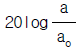
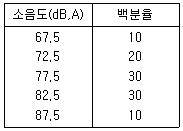
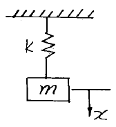
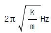
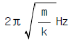
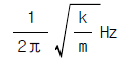
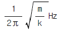
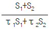

소음진동산업기사 (2003-08-31 기출문제)
1과목: 소음진동개론
1. 측정된 음압의 실효치가 30[N/m2]인 정현파의 음압 레벨은?
- 114 dB
- 124 dB
- 134 dB
- 144 dB
(정답률: 알수없음)

2. 음의세기(sound intensity)가 0.5×10-4w/m2일 때 음압도는 몇 dB인가?(단, 공기의 밀도 및 음의 전파속도는 각각 1.2kg/m3 및 340m/s로 한다.)
- 81
- 77
- 73
- 69
(정답률: 알수없음)
3. 파동에 관한 설명으로 틀린 것은?
- 종파를 소밀파라고도 부른다.
- 수면파와 음파는 횡파에 속한다.
- 횡파는 매질이 없어도 전파된다.
- 종파는 파동의 진행 방향과 매질의 진동 방향이 서로 평행하다.
(정답률: 알수없음)
4. 가속도레벨의 정의는

의 수식에 의한다. 여기서 기준가속도 ao는?- 10-3m/sec2
- 10-4m/sec2
- 10-5m/sec2
- 10-6m/sec2
(정답률: 알수없음)
5. 고속도로의 자동차 소음은 다음 음원 중 어느 것에 가장 가까운가?
- 점음원
- 선음원
- 면음원
- 입체음원
(정답률: 알수없음)
6. 원음장중 역 2승법칙이 만족되는 구역으로 가장 알맞는 것은?
- 확산음장
- 자유음장
- 확대음장
- 잔향음장
(정답률: 알수없음)
7. '진동의 역치'에 관한 설명으로 알맞는 것은?
- 인간이 견딜수 있는 최소 진동레벨값
- 인간이 견딜수 있는 최대 진동레벨값
- 진동을 겨우 느낄수 있는 진동레벨값
- 진동을 최대로 느낄수 있는 진동레벨값
(정답률: 알수없음)
8. 노인성 난청에 있어서 청력손실이 일어나기 시작하는 주파수역으로 가장 알맞는 것은?
- 500Hz
- 1000Hz
- 4000Hz
- 6000Hz
(정답률: 알수없음)
9. 다음 청각기관중 임피이던스 변환기능을 가진 것은?
- 고막
- 이소골
- 기저막
- 외이도
(정답률: 알수없음)
10. 음의 회절에 관한 내용으로 가장 거리가 먼 것은?
- 장애물 뒤쪽으로 음이 전파하는 현상이다.
- 회절 전과 후의 음속차로 회절의 정도를 알 수 있다.
- 파장이 크면 회절이 잘 된다.
- 물체의 틈구멍에 있어서는 그 틈구멍이 작을수록 회절이 잘 된다.
(정답률: 알수없음)
11. 어느 시간대에서 변동하는 소음레벨의 에너지를 동시간대의 정상소음의 에너지로 치환한 값을 무엇이라 하는가?
- 소음평가지수(NRN)
- 소음통계레벨
- 등가소음레벨
- 감각소음레벨
(정답률: 알수없음)
12. 소음의 거리 감쇠에서 무지향성 점음원이 자유 공간에 위치하는 경우에 대한 식으로 적절한 것은?
- PWL = SPL + 20 log r + 11
- PWL = SIL + 10 log r + 5
- PWL = SPL + 10 log r + 11
- PWL = SIL + 20 log r + 5
(정답률: 알수없음)
13. 횡 6m, 종 3m의 벽면 밖에서 음압레벨이 100dB라면 12m 떨어진 곳은 몇 dB 일까? (단, 면음원 기준 )
- 81.4
- 75.4
- 71.4
- 68.4
(정답률: 알수없음)
14. 길이가 약 50cm인 양단이 뚫린 관이 공명하는 기본음의 주파수는? (단, 15℃ 기준)
- 170Hz
- 340Hz
- 510Hz
- 680Hz
(정답률: 알수없음)
15. 600-1200, 1200-2400, 2400-4800(Hz)의 3개의 밴드로 분석한 음압레벨을 산술평균한 값으로 소음을 평가하는 것은?
- PSIL(우선회화 방해레벨)
- SIL (회화방해레벨)
- NRN (소음평가지수)
- LN (소음통계레벨)
(정답률: 알수없음)
16. 감음계수(NRC)에 관한 설명으로 가장 알맞는 것은?
- 1/1옥타브 대역으로 측정한 중심주파수 500,1000 2000, 4000Hz에서의 흡음율의 기하평균치이다.
- 1/1옥타브 대역으로 측정한 중심주파수 500,1000 2000, 4000Hz에서의 흡음율의 산술평균치이다.
- 1/3옥타브 대역으로 측정한 중심주파수 250,500,1000 2000Hz에서의 흡음율의 기하평균치이다.
- 1/3옥타브 대역으로 측정한 중심주파수 250,500,1000 2000Hz에서의 흡음율의 산술평균치이다.
(정답률: 알수없음)
17. 40 phon의 소리는 몇 sone의 소리로 들리는가?
- 1
- 2
- 4
- 8
(정답률: 알수없음)
18. 중심주파수 500Hz, 1000Hz, 2000Hz에서의 청력손실을 각각 20dB, 40dB, 30dB라 하면 평균청력손실은? (단, 4분법 기준)
- 약 26dB
- 약 33dB
- 약 42dB
- 약 48dB
(정답률: 알수없음)
19. 80 dB의 소음과 90 dB의 소음이 합쳐질 경우 합성소음레벨은 얼마인가?
- 약 85 dB
- 약 88 dB
- 약 90 dB
- 약 95 dB
(정답률: 알수없음)
20. 음압이 20배로 증가하면 음압레벨은 몇 dB 증가하는가?
- 10 dB
- 20 dB
- 26 dB
- 38 dB
(정답률: 알수없음)
2과목: 소음진동 공정시험 기준
21. 발파진동 측정을 위해 암진동레벨 측정시 샘플주기의 결정기준으로 적절한 것은?(단, 디지탈 진동자동분석계를 사용할 경우)
- 0.1초 이내에서 결정
- 0.5초 이내에서 결정
- 1.0초 이내에서 결정
- 5.0초 이내에서 결정
(정답률: 알수없음)
22. 소음계와 진동레벨계 공히 레벨렌지 변환기의 전환오차는 몇 dB이내이어야 하는가?
- 0.1
- 0.3
- 0.5
- 1.0
(정답률: 알수없음)
23. 진동레벨 기록기를 사용하여 공장 배출허용기준을 측정할 경우 몇 분이상 측정하여 그 지점의 측정진동레벨 또는 암진동레벨을 정하는가?
- 3분 이상
- 5분 이상
- 30분 이상
- 60분 이상
(정답률: 알수없음)
24. 시간대별 평균 발파횟수(N)에 따른 발파소음 보정량을 구하는 식으로 옳은 것은?
- log10 N
- 10 log10 N
- 20 log10 N
- 20 log10 N - 32.4
(정답률: 알수없음)
25. 측정소음도에 암소음을 보정한 후 얻어진 소음도는?
- 충격소음도
- 평가소음도
- 등가소음도
- 대상소음도
(정답률: 알수없음)
26. 소음.진동공정 시험방법의 용어의 정의에서 [소음계의 청감 보정회로를 통하여 측정한 지시치]는?
- 보정치
- 소음도
- 측정음
- 대상음
(정답률: 알수없음)
27. 공장소음 배출허용기준의 측정지점에 1.5m를 초과하는 장애물이 있는 경우로서 그 장애물이 방음벽이나 차음이 없는 장애물인 경우 측정점을 가장 정확히 나타낸 것은?
- 장애물 밖으로 1-3.5m 지점
- 장애물 밖으로 5-10m 지점
- 장애물로 부터 소음원방향으로 1-3.5m 떨어진 지점
- 장애물로 부터 소음원방향으로 5-10m 떨어진 지점
(정답률: 알수없음)
28. 환경소음의 상시측정용 소음계를 도로변지역에 설치할 경우 측정 높이는 최대 지면위 얼마로 할 수 있는가?
- 2m
- 3m
- 4m
- 5m
(정답률: 알수없음)
29. 다음중 소음측정시에 사용되는 부속장치와 가장 거리가 먼 것은?
- 방풍망
- 삼각대
- 기록기
- 표준음 발생기
(정답률: 알수없음)
30. 항공기소음측정시 측정위치의 '원추형 상부공간'에 대하여 알맞게 기술된 것은?
- 측정위치를 지나는 지면 또는 바닥면의 법선에 반각 45° 의 선분이 지나는 공간
- 측정위치를 지나는 지면 또는 바닥면의 법선에 반각 50° 의 선분이 지나는 공간
- 측정위치를 지나는 지면 또는 바닥면의 법선에 반각 60° 의 선분이 지나는 공간
- 측정위치를 지나는 지면 또는 바닥면의 법선에 반각 80° 의 선분이 지나는 공간
(정답률: 알수없음)
31. 진동레벨계의 기본구조구성 순서로 알맞는 것은?
- 진동픽업-동특성조절기-레벨렌지변환기-증폭기-감각보정회로
- 진동픽업-감각보정회로-증폭기-레벨렌지변환기-동특성조절기
- 진동픽업-증폭기-동특성조절기-레벨렌지변환기-감각보정회로
- 진동픽업-레벨렌지변환기-증폭기-감각보정회로-동특성조절기
(정답률: 알수없음)
32. 항공기소음의 측정기간으로 적절한 것은?
- 항공기소음을 대표할 수 있는 시기를 선정하여 원칙적으로 연속 7일간 측정한다.
- 항공기소음을 대표할 수 있는 시기를 선정하여 원칙적으로 연속 10일간 측정한다.
- 항공기소음을 대표할 수 있는 시기를 선정하여 원칙적으로 연속 15일간 측정한다.
- 항공기소음을 대표할 수 있는 시기를 선정하여 원칙적으로 연속 30일간 측정한다.
(정답률: 알수없음)
33. 다음 ( )에 알맞은 말로 짝지어진 것은? [ 공정시험법상 환경기준의 소음측정에서 소음측정 시각 및 지점의 수는 : 낮시간대(06-22)는 각 측정지점에서 ( ① )시간 이상 간격 ( ② )회 이상 측정하여 산출 평균한 값을 측정소음도로 한다. ]愾
- ① 4 ② 2
- ① 2 ② 4
- ① 4 ② 3
- ① 3 ② 4
(정답률: 알수없음)
34. 진동픽업의 횡감도는 규정주파수에서 수감축 감도에 대한 차이가 몇 dB이상이어야 하는가? (단, 연직특성)
- 15dB이상
- 10dB이상
- 5dB이상
- 3dB이상
(정답률: 알수없음)
35. 소음진동공정시험방법에서 정한 소음계의 마이크로폰 성능으로 적절한 것은?
- 지향성이 작은 확전형
- 지향성이 큰 확전형
- 지향성이 작은 압력형
- 지향성이 큰 압력형
(정답률: 알수없음)
36. 소음환경기준에 정한 도로변지역의 범위로 옳은 것은?
- 도로단으로부터 도로폭 이내
- 도로단으로부터 차선수× 50m 이내
- 도로단으로부터 차선수× 10m 이내
- 도로단으로부터 50m 이내
(정답률: 알수없음)
37. 어떤 지점에서 소음을 측정하여 아래와 같은 결과를 얻었다면 이 지점의 등가소음도는 몇 dB(A) 인가?

- 75
- 79
- 81
- 84
(정답률: 알수없음)
38. 환경기준 소음 측정 조건에 관한 내용으로 알맞지 않은 것은?
- 소음계의 마이크로폰은 측정위치에 받침장치를 설치하여 측정하는 것을 원칙으로 한다.
- 소음계의 마이크로폰은 주소음원 방향으로 하여야한다.
- 풍속이 2m/sec 이상일 때는 반드시 마이크로폰에 방풍망을 부착하여야 한다.
- 진동이 많은 장소 또는 전자장의 영향을 받는 곳에서는 측정할 수 없으므로 측정점을 변경하여야 한다.
(정답률: 알수없음)
39. 도로진동 측정점 기준은?
- 도로단으로 부터 차선 × 50m 지점
- 도로단으로 부터 1m 지점
- 피해자측과 도로단의 중간지점
- 피해자측 부지경계선중 진동레벨이 높을 것으로 예상되는 지점
(정답률: 알수없음)
40. 측정소음도가 70dB(A)이고 암소음도가 64dB(A)이면 암소음도을 보정한 소음도는 몇 dB(A)이겠는가?
- 66
- 67
- 68
- 69
(정답률: 알수없음)
3과목: 소음진동방지기술
41. 음향에너지 밀도를 희박화하고 공통단을 줄여서 소음(消音)하는 방식의 소음기(消音器)는 어떤 것인가?
- 팽창형 소음기
- 공명형 소음기
- 간섭형 소음기
- 흡음형 소음기
(정답률: 알수없음)
42. 일반적으로 수목에 의한 감음효과는 그 폭 10m당 몇 dB 정도인가?
- 9dB
- 7dB
- 5dB
- 3dB
(정답률: 알수없음)
43. 그림과 같이 질량 m인 추를 스프링상수가 k인 스프링에 매달았을때의 고유진동수는?





(정답률: 알수없음)
44. 소음기가 있는 그 상태에서 소음기의 입구 및 출구에서 측정된 음압레벨의 차로 정의 되는 것은?
- 동적삽입손실치(DIL)
- 삽입손실치(IL)
- 감음량(NR)
- 감쇠치(L)
(정답률: 알수없음)
45. 어떤 차음재료의 투과손실이 20 dB 이라면 입사음세기는 투과음세기 보다 몇 배가 되겠는가?
- 10배
- 20배
- 100배
- 200배
(정답률: 알수없음)
46. 면적 S1, S2로서 투과율이 각각 τ1, τ2인 2개 부분으로 된 벽의 총합투과손실은 TL=10 log

로 주어진다. 투과손실 20dB인 창 10m2과 투과손실 30dB인 벽 100m2으로 구성된 벽의 총합투과손실은 약 몇 dB인가?- 27
- 21
- 19
- 13
(정답률: 알수없음)
47. 원형닥트에 방사되는 음을 감음하고자 닥트내면에 다공질 흡음재료를 내장하였다. 흡음재를 부착한 후 닥트의 직경은 30cm, 길이는 2m 이며 상수 K 값은 0.5이다. 이 관에서 일어나는 소음 감쇠치는? (단, 닥트내 흡음재 부착두께는 무시한다.)
- 약 13.4 dB
- 약 15.7 dB
- 약 17.4 dB
- 약 19.8 dB
(정답률: 알수없음)
48. 방진고무 1개에 대하여 150kgf의 하중이 걸릴때 정적 스프링상수가 30kgf/mm의 방진고무를 사용하면 처짐량은?
- 3 mm
- 5 mm
- 7 mm
- 9 mm
(정답률: 알수없음)
49. 다음중 금속스프링의 장점이 아닌 것은?
- 저주파 차진에 좋다.
- 최대 변위가 허용된다.
- 뒤틀리거나 오그라들지 않는다.
- 로킹이 일어나지 않는다.
(정답률: 알수없음)
50. 구조가 복잡하여도 성능이 좋아서 기계류나 특수 실험실 등의 고급방진에 사용되는 것은?
- 금속스프링
- 방진고무
- 탄성블럭
- 공기스프링
(정답률: 알수없음)
51. 공장의 실내 총표면적이 300m2이고, 평균흡음률이 0.3이라면 실정수는 얼마나 되겠는가?
- 112.48 m2
- 128.57 m2
- 134.24 m2
- 141.72 m2
(정답률: 알수없음)
52. 변위가 x = 3sin(0.5π t)로 표시되는 조화운동의 진동수 (Hz)는 얼마인가?
- 0.25Hz
- 0.5Hz
- 1Hz
- 2Hz
(정답률: 알수없음)
53. 전달력은 항상 외력보다 작기 때문에 차진이 유효한 경우는 ? (단, f:강제 진동수 , fn: 고유진동수)
- f/fn = 1
- f/fn＜√2
- f/fn＞√2
- f/fn=√2
(정답률: 알수없음)
54. 점성감쇠가 있는 1자유도자유진동에서 임계감쇠(critical damping)란 감쇠비가 어떤 값을 갖는 경우인가?
- 0이다.
- 1이다.
- 1보다 작다.
- 1보다 크다.
(정답률: 알수없음)
55. 다공질형 흡음재에 관한 설명으로 알맞지 않은 것은?
- 중,고음역에서 흡음성이 좋다.
- 시공시에는 벽면으로부터 배후공기층을 두고 설치하면 저음역의 흡음율도 개선된다.
- 흡음재를 벽에 바로 부착시킬 때 두께가 최소한 입사음 파장의 1/2이상이 되어야 한다.
- 섬유,발포재료 등의 내부의 기공이 상호 연속되는 석면,암면등을 말한다.
(정답률: 알수없음)
56. 감쇠가 없는 강제진동에서 전달율을 0.1로 하려고 한다. 진동수비 W/Wn의 값은?
- 3.32
- 4.43
- 5.54
- 6.65
(정답률: 알수없음)
57. 간섭형 소음기에 관한 설명으로 알맞지 않은 것은?
- 최대 투과손실치는 f(Hz)의 짝수배 주파수에서 일어나 이론적으로 무한대가 된다.
- 최대 투과손실치는 실용적으로 20dB 내외이다.
- 저,중음역의 탁월주파수 성분에 유효하다.
- 디젤기관등의 흡,배기음의 소음에 사용된다.
(정답률: 알수없음)
58. 일중벽에 입사하는 음파의 주파수가 2,000Hz이고, 이 벽의 면밀도가 3kg/m2 이라 하면 투과손실은? (단, 실용적으로 사용되는 식을 적용함)
- 14 dB
- 20 dB
- 24 dB
- 30 dB
(정답률: 알수없음)
59. 정재파 관내법을 사용하여 시료의 흡음성능을 측정하였더니 1000Hz 순음인 sine파의 정재파비가 2.0 이었다면 이 흡음재의 흡음률은?
- 0.889
- 0.899
- 0.933
- 0.958
(정답률: 알수없음)
60. 감쇠가 계에서 갖는 기능이라 볼 수 없는 것은?
- 기초로의 진동에너지 전달의 감소
- 공진시에 진동진폭의 감소
- 가진력의 지향성 감소
- 충격시의 진동이나 자유진동을 감소
(정답률: 알수없음)
4과목: 소음진동방지기술
61. 소음· 진동규제법에서 교통기관에 포함되지 않은 것은?
- 기차
- 전차
- 도로
- 선박
(정답률: 알수없음)
62. 소음· 진동에 관한 환경관리인의 교육은 몇 년마다 1회 이상의 교육을 받아야 하는가?
- 1년
- 2년
- 3년
- 4년
(정답률: 알수없음)
63. 소음진동검사를 의뢰할 수 있는 검사기관과 거리가 먼것은?
- 국립환경연구원
- 환경기술연구원
- 환경관리공단
- 유역환경청
(정답률: 알수없음)
64. 소음 진동배출시설 설치허가 신청시 첨부서류가 아닌것은?
- 배출시설의 설치내역서
- 방지시설의 설치내역서와 그 도면
- 배출시설의 배치도
- 방지시설의 설치기간 및 공사비내역서
(정답률: 알수없음)
65. 소음 진동배출시설이 아닌 물체로 부터 발생하는 소음을 제거하거나 감소시키는 시설로서 부령으로 정하는 것을 바르게 정의한 것은?
- 방음시설
- 방진시설
- 소음방지시설
- 소음진동방지시설
(정답률: 알수없음)
66. 자동차를 제작하고자 하는 자는 제작되는 자동차에서 배출되는 소음이 제작차 소음허용기준에 적합하게 제작 하여야 하며 제작차 소음허용기준은 3가지의 자동차 소음 종류별로 소음배출특성을 참작하여 정하여야 한다. 3가지 소음배출항목에 속하지 않는 것은?
- 가속주행소음
- 배기소음
- 경적소음
- 주행소음
(정답률: 알수없음)
67. 특정공사의 사전신고는 공사개시 몇일전에 신고서를 누구에게 제출하여야 하는가?
- 3일, 시 도지사
- 10일, 환경부장관
- 14일, 건설교통부장관
- 15일, 유역환경청장
(정답률: 알수없음)
68. 환경관리인의 개임시 신고기간은? (단, 개임한 날부터)
- 7일 이내
- 10일 이내
- 15일 이내
- 30일 이내
(정답률: 알수없음)
69. 다음중 환경관리인의 관리사항과 가장 거리가 먼 것은?
- 배출시설 및 방지시설의 관리에 관한 사항
- 배출시설 및 방지시설의 개선에 관한 사항
- 소음진동방지를 위하여 시,도지사가 지시하는 사항
- 배출시설 및 방지시설의 운영에 관한 사항
(정답률: 알수없음)
70. 소음환경 기준이 설정되어 있는 환경관련 법령은?
- 소음.진동 규제법
- 환경오염 피해 분쟁 조정법
- 소음.진동환경 보전법
- 환경정책 기본법
(정답률: 알수없음)
71. 환경부장관의 인증을 받은 자동차에 대한 인증변경 신청시 첨부하여야 할 서류가 아닌 것은?
- 동일차종임을 입증할 수 있는 서류
- 자동차 주행 기록부
- 자동차 제원 명세서
- 변경된 인증내용에 대한 설명서
(정답률: 알수없음)
72. 환경관리인 자격기준 중 소음 진동기사 2급은 기계분야기사, 전기분야기사, 대기환경기사, 수질환경기사 각 2급이상의 자격소지자로서 환경분야에서 몇년이상 종사자로 대체할 수 있는가? (단, 기사 2급은 산업기사와 같음)
- 1년
- 2년
- 3년
- 4년
(정답률: 알수없음)
73. 공장소음진동 배출허용기준의 대상소음도에서 지역별 보정치로 보정한 평가소음도가 50dB(A)이하여야 한다. 보정 내용 및 보정치가 잘못된 것은?
- 전용주거지역, 녹지지역 보정치: 0
- 일반주거지역, 준주거지역 보정치: -5
- 상업지역, 준공업지역 보정치: -10
- 일반공업지역, 전용공업지역 보정치: -20
(정답률: 알수없음)
74. 소음환경기준에서 도로변 지역중 일반 주거지역에서 낮 시간때 (06:00-22:00) 환경기준은?
- 60LeqdB(A)
- 65LeqdB(A)
- 70 LeqdB(A)
- 75LeqdB(A)
(정답률: 알수없음)
75. 다음은 환경부장관, 시.도지사가 고시하는 측정망 설치 계획에 관한 설명 중 옳은 것은?
- 측정망 설치 계획의 고시는 최초로 측정소를 설치하게 되는 날 6개월 이전에 해야 한다.
- 측정망 설치계획에는 측정기기의 배치도와 종류가 포함되어야 한다.
- 시.도지사는 측정망 설치계획을 결정, 고시하는 경우 그 설치 위치 등에 관하여 미리 관할 유역환경청장의 의견을 들어야 한다.
- 측정망 설치계획에는 측정항목 및 규제기준이 포함되어야 한다.
(정답률: 알수없음)
76. 항공기 소음의 한도에서 공항주변의 인근지역과 기타지역에서 항공기 소음영향도(WECPNL)는 각각 얼마인가?
- 공항주변의 인근지역 80, 기타지역 70
- 공항주변의 인근지역 80, 기타지역 90
- 공항주변의 인근지역 90, 기타지역 80
- 공항주변의 인근지역 90, 기타지역 100
(정답률: 알수없음)
77. 소음, 진동배출 허용기준을 준수하지 아니한 자에 대한 과태료 금액으로 맞는 것은?
- 50만원 이하의 과태료
- 100만원 이하의 과태료
- 200만원 이하의 과태료
- 300만원 이하의 과태료
(정답률: 알수없음)
78. 2001년도에 제작된 경자동차의 경적소음(dB(C))의 허용기준은?
- 115 이하
- 113 이하
- 112 이하
- 110 이하
(정답률: 알수없음)
79. 공작기계, 압연기, 성형기의 소음배출시설로서 기준은?
- 20마력이상
- 30마력이상
- 40마력이상
- 50마력이상
(정답률: 알수없음)
80. 생활소음의 규제기준 중 주거지역내의 주간시간 (08:00-18:00)대 공사장 소음규제기준은?
- 60dB(A)이하
- 65dB(A)이하
- 70dB(A)이하
- 75dB(A)이하
(정답률: 알수없음)
음압 레벨 = 20log10(음압의 실효치/기준 음압의 실효치)
여기서 기준 음압의 실효치는 20µPa이다.
따라서, 주어진 문제에서 음압의 실효치가 30[N/m2]이므로,
음압 레벨 = 20log10(30[N/m2]/20µPa) = 124 dB
따라서, 정답은 "124 dB"이다.